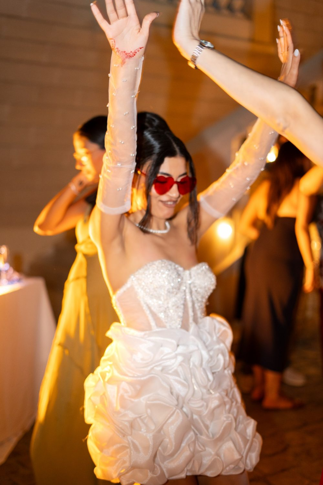
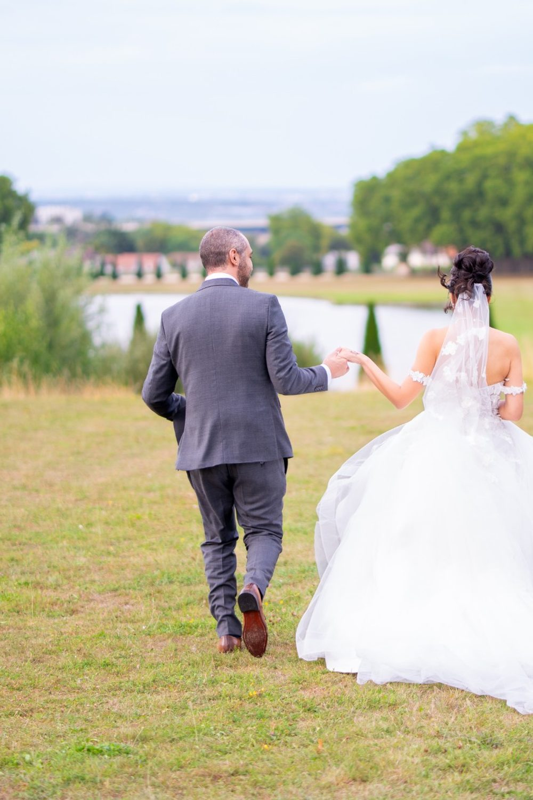
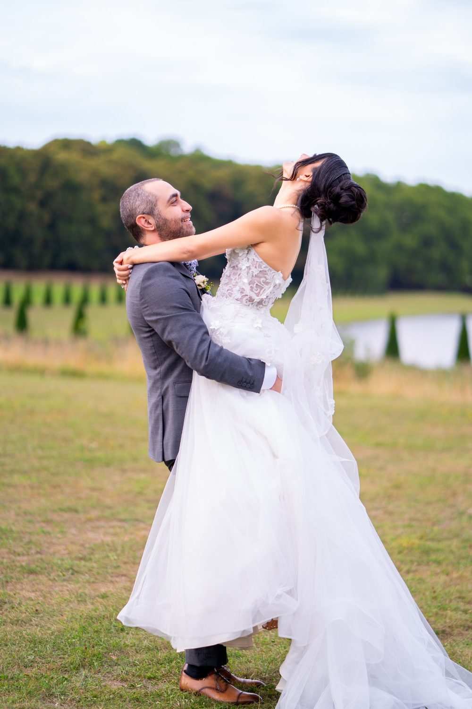

Photographe et vidéaste de mariage à Fontainebleau
Un mariage dure une journée et se regarde toute une vie. Nous le photographions et le filmons du premier regard dans le miroir à la dernière danse. Une séance à Fontainebleau, c'est aussi la possibilité de varier les ambiances entre Château de Fontainebleau et Forêt de Fontainebleau.

Où faire votre shooting
Pour un mariage à Fontainebleau, nous photographions et filmons les portraits de couple entre le Château de Fontainebleau, l'Étang des Carpes et le Jardin de Diane. L'escalier en fer à cheval du Château de Fontainebleau sert de décor à la descente des mariés. Au bord de l'Étang des Carpes, le pavillon central encadre un portrait romantique. Les parterres du Jardin de Diane accueillent les photos de groupe. Un teaser peut s'achever dans les sous-bois de la Forêt de Fontainebleau, à la lumière de fin de journée.
Nos lieux pour cette séance
Château de Fontainebleau
Escalier en fer à cheval et cour des Adieux. Un fond d'architecture pour les portraits des mariés, avec le temps de poser sans presser vos invités.
Forêt de Fontainebleau
Chaos de grès et sous-bois. Un décor de verdure pour une séance couple calme entre la cérémonie et le cocktail.
Jardin de Diane
Parterres et bassin.
Étang des Carpes
Pavillon central et allées.
Pour que tout se passe bien
Royal, boisé, avec de grands rochers. La forêt est très douce en milieu de matinée.
Notre reportage de mariage suit le fil réel de votre journée : préparatifs, cérémonie civile ou laïque, vin d'honneur, dîner, soirée. Nous évitons les poses figées et gardons les gestes qui ne se rejouent pas.
À Fontainebleau, renseignez-vous auprès du château sur les règles de prise de vue dans la cour des Adieux et les jardins. Pour les invités venant de Paris, le Transilien jusqu'à Fontainebleau-Avon évite le stationnement le jour du mariage.
À Fontainebleau, vous êtes à Transilien Fontainebleau-Avon : nous préparons l'itinéraire entre les lieux avec vous.




Avant de nous écrire
Où faire les photos de couple d'un mariage à Fontainebleau ?
Pour les photos de couple d'un mariage à Fontainebleau, nous enchaînons l'escalier en fer à cheval du Château de Fontainebleau, les allées de l'Étang des Carpes et les parterres du Jardin de Diane. La Forêt de Fontainebleau offre un décor plus sauvage en fin de journée.
Peut-on photographier un mariage au Château de Fontainebleau ?
Photographier un mariage aux abords du Château de Fontainebleau dépend des règles fixées par le château pour la cour des Adieux et les jardins. Renseignez-vous avant le jour J et transmettez-nous les consignes pour adapter notre matériel.
Comment venir à Fontainebleau ?
Transilien Fontainebleau-Avon. Nous nous déplaçons avec notre matériel photo et vidéo.
Photographe et vidéaste sont-ils deux personnes différentes ?
Oui, une équipe photo et une équipe vidéo, coordonnées pour travailler sans se gêner pendant la cérémonie.
Parlons de votre mariage
Demander un devisMariage ailleurs en Île-de-France
© Le Couple Photographe · Photographe de mariage Paris & Île-de-France · Mis à jour le 10 octobre 2026
Demander un devis